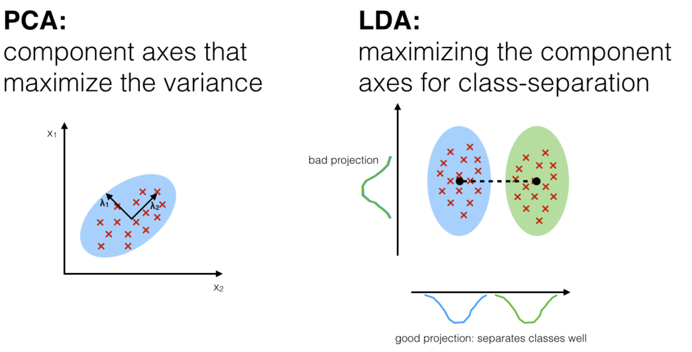

3. Feature Extraction (featureExtraction.ipynb)#
Feature Extraction Methods#
Feature extraction is a key step in machine learning and data preprocessing. It transforms the data into a lower-dimensional space while retaining important information.
In this notebook, we will cover:
Linear methods:
Principal Component Analysis (PCA)
Linear Discriminant Analysis (LDA)
Nonlinear methods:
Independent Component Analysis (ICA)
Isomap and Multidimensional Scaling (MDS)
Feature Extraction: Linear Methods#
1. Principal Component Analysis (PCA)#
Explanation#
Principal Component Analysis (PCA) is a dimensionality reduction technique.
It finds new orthogonal axes (principal components) that maximize the variance in the data, allowing us to represent the data with fewer dimensions while preserving as much information (variance) as possible.
Key Steps#
Standardize the data.
Compute the covariance matrix.
Calculate the eigenvalues and eigenvectors of the covariance matrix.
Project the data onto the top \(k\) eigenvectors corresponding to the largest eigenvalues.
Formula#
The PCA transformation can be expressed as: \(Z = X W\) Where:
\(X\): Original data matrix (centered).
\(W\): Matrix of eigenvectors (principal components).
\(Z\): Transformed data in the reduced-dimensional space.
📚Mathematical Explanation and Implementation of PCA#
Mathematical Steps of PCA#
Suppose we have a dataset:
\( X = \{x^{(1)}, x^{(2)}, ..., x^{(n)}\}, \quad x^{(i)} \in \mathbb{R}^d \)
where:
\(n\) = number of samples
\(d\) = number of features.
Our goal: Find a new basis \(W\) (a set of vectors) such that projecting \(X\) onto \(W\) maximizes the variance.
Step-by-Step Mathematics#
Step 1: Standardize the Data#
First, we center the data (mean = 0):
\( \mu = \frac{1}{n} \sum_{i=1}^{n} x^{(i)} \) \( \tilde{x}^{(i)} = x^{(i)} - \mu \)
Thus, our centered matrix:
\( \tilde{X} = X - \mu \)
Example in Python:
import numpy as np
mu = np.mean(X, axis=0)
X_centered = X - mu
Step 2: Compute the Covariance Matrix#
The covariance matrix captures how much two features vary together.
Mathematically:
\( \text{Cov}(X) = \frac{1}{n-1} \tilde{X}^T \tilde{X} \)
Where:
\( \tilde{X} \) is the mean-centered data.
\( n \) is the number of samples.
Python Example:
cov_matrix = np.cov(X_centered, rowvar=False)
Step 3: Compute Eigenvalues and Eigenvectors#
After obtaining the covariance matrix, the next step is to compute its eigenvalues and eigenvectors.
We solve the eigenvalue problem:
\( \text{Cov}(X) \, v = \lambda \, v \)
Where:
\( v \) = eigenvector (direction of principal component),
\( \lambda\) = eigenvalue (amount of variance along \( v \)).
Each eigenvector points in a direction where the data varies the most, and the corresponding eigenvalue tells us how much variance is in that direction.
Python Example:#
eigenvalues, eigenvectors = np.linalg.eigh(cov_matrix)
Step 4: Sort Eigenvectors by Decreasing Eigenvalues#
After computing eigenvalues and eigenvectors, we need to sort them in order of decreasing eigenvalues.
Why?
Eigenvalues indicate the amount of variance explained by each principal component.
We want the principal components that explain the most variance first.
Procedure:#
Sort the eigenvalues from largest to smallest.
Reorder the eigenvectors to match the sorted eigenvalues.
Python Example:#
# Sort eigenvalues and eigenvectors
sorted_idx = np.argsort(eigenvalues)[::-1] # Indices for sorting in descending order
eigenvalues = eigenvalues[sorted_idx]
eigenvectors = eigenvectors[:, sorted_idx]
Step 5: Select the Top \(k\) Eigenvectors#
After sorting, we choose the top \(k\) eigenvectors corresponding to the largest \(k\) eigenvalues.
Why?
These \(k\) eigenvectors form a new basis that captures most of the variance in the data with fewer dimensions.
We construct the projection matrix \( W \):
\( W = [v_1, v_2, \dots, v_k] \)
Where:
\( v_i\) are the selected eigenvectors,
\( W \in \mathbb{R}^{d \times k} \) (d = original number of features, k = reduced dimension).
Choosing \(k\):#
You can choose \(k\) based on:
A fixed number (e.g., \(k=2\) for visualization).
The percentage of variance you want to retain.
Python Example:#
k = 2 # Number of principal components to keep
W = eigenvectors[:, :k] # Take the first k eigenvectors
Step 6: Project the Data#
Finally, we project the original mean-centered data onto the new \(k\)-dimensional space.
The projection is computed as:
\( Z = \tilde{X} W \)
Where:
\( \tilde{X} \) is the mean-centered data matrix,
\( W \) is the matrix of the top (k) eigenvectors,
\( Z \) is the transformed data in (k)-dimensions.
Python Example:#
X_pca = np.dot(X_centered, W)
Now, X_pca contains the data represented in the reduced k-dimensional space!
Each row of X_pca is a new representation of the original sample.
PCA has reduced the dimensionality while preserving as much variance as possible.
Step 7: (Optional) Reconstruct the Original Data (Inverse Transform)#
Sometimes, after reducing the dimensions, you might want to reconstruct an approximation of the original data using the reduced features.
The reconstruction is done by:
\( \tilde{X}_{\text{approx}} = Z W^T \)
Where:
\(Z\) is the low-dimensional data obtained after projection,
\( W^T \) is the transpose of the matrix of top eigenvectors.
To get the data in the original scale (before centering), add back the mean:
\( X_{\text{reconstructed}} = \tilde{X}_{\text{approx}} + \mu \)
Where:
\( \mu \) is the mean vector that was subtracted during centering.
Python Example:#
# Approximate the original centered data
X_approx = np.dot(X_pca, W.T)
# Recover the original data by adding the mean
X_reconstructed = X_approx + X_mean
Note: The reconstructed data will not be exactly the same as the original unless all components are used!
Example#
Below is an example of applying PCA on synthetic data and visualizing the results:
import numpy as np
from sklearn.decomposition import PCA
import matplotlib.pyplot as plt
# Generate synthetic data
np.random.seed(42)
X = np.random.randn(100, 3)
plt.scatter(X[:, 0], X[:, 1], c='blue', alpha=0.7)
plt.title("Original Data")
plt.xlabel("feature 1")
plt.ylabel("feature 2")
plt.grid()
plt.show()
# Apply PCA
pca = PCA(n_components=2)
X_pca = pca.fit_transform(X)
# Plot results
plt.scatter(X_pca[:, 0], X_pca[:, 1], c='blue', alpha=0.7)
plt.title("PCA Projection")
plt.xlabel("Principal Component 1")
plt.ylabel("Principal Component 2")
plt.grid()
plt.show()
import numpy as np
import matplotlib.pyplot as plt
from sklearn.decomposition import PCA
from sklearn.preprocessing import StandardScaler
scaler = StandardScaler()
n_samples = 1000 # تعداد نقاط
width = 4 # عرض مستطیل
height = 10 # ارتفاع مستطیل
rotation_angle = np.pi / 2 # زاویه چرخش (مثلاً 30 درجه)
# تولید نقاط در محدوده مستطیل
x = np.random.uniform(-width / 2, width / 2, n_samples)
y = np.random.uniform(-height , height , n_samples)
rect_data = np.column_stack((x, y))
# ایجاد ماتریس چرخش
rotation_matrix = np.array([
[np.cos(rotation_angle), -np.sin(rotation_angle)],
[np.sin(rotation_angle), np.cos(rotation_angle)]
])
# اعمال چرخش روی نقاط مستطیل
rotated_data = rect_data @ rotation_matrix.T
data = rotated_data
#data_scaled = scaler.fit_transform(data)
pca = PCA(n_components=2)
pca_result = pca.fit_transform(data)
principal_components = pca.components_
plt.scatter(pca_result[:, 0], pca_result[:, 1], label='Data Points')
origin = np.zeros((2,))
for i in range(len(principal_components)):
plt.quiver(origin[0], origin[1], principal_components[i, 0], principal_components[i, 1], angles='xy', scale_units='xy', scale=1, color='r')
plt.xlabel('Principal Component 1')
plt.ylabel('Principal Component 2')
plt.title('PCA - Principal Components')
plt.grid(True)
plt.show()
2. Linear Discriminant Analysis (LDA)#
Explanation#
Linear Discriminant Analysis (LDA) is a supervised dimensionality reduction technique. It aims to maximize the separation between multiple classes by projecting the data onto a lower-dimensional space.
Goal of LDA#
Find a projection vector \( w \) that maximizes the separation between classes.
Project the data onto \( w \) so that:
The between-class variance is maximized.
The within-class variance is minimized.
Key Steps#
Compute the within-class scatter matrix (\(S_W\)).
Compute the between-class scatter matrix (\(S_B\)).
Find the eigenvalues and eigenvectors of \(S_W^{-1} S_B\).
Select the top eigenvectors for projection.
Formula#
The optimal projection matrix \(W\) is given by: \(W = \text{argmax}_W \frac{|W^T S_B W|}{|W^T S_W W|} \) Where:
\(S_W\): Within-class scatter matrix.
\(S_B\): Between-class scatter matrix.
Step by step implementation#
Step 1: Define Mean Vectors#
For each class \( i\), compute the mean vector:
\( \mu_i = \frac{1}{N_i} \sum_{x \in C_i} x \)
Where:
\( \mu_i \) = mean of class \(i \),
\( N_i \) = number of samples in class $ i $,
\( C_i \) = set of samples belonging to class \( i\).
Also, compute the overall mean:
\( \mu = \frac{1}{N} \sum_{i=1}^c \sum_{x \in C_i} x \)
Where:
\( N\) = total number of samples,
\( c \) = number of classes.
Step 2: Compute Scatter Matrices#
2.1. Within-class Scatter Matrix ( S_W )#
Measures the scatter inside each class:
\( S_W = \sum_{i=1}^c \sum_{x \in C_i} (x - \mu_i)(x - \mu_i)^T \)
Sum of covariance matrices of each class.
2.2. Between-class Scatter Matrix ( S_B )#
Measures the scatter between the class means:
\( S_B = \sum_{i=1}^c N_i (\mu_i - \mu)(\mu_i - \mu)^T \)
Weighted by the number of samples in each class.
Step 3: Solve the Generalized Eigenvalue Problem#
We want to maximize the ratio of the between-class scatter to the within-class scatter:
\( \text{Objective:} \quad \max_w \frac{w^T S_B w}{w^T S_W w} \)
This leads to the generalized eigenvalue problem:
\( S_W^{-1} S_B w = \lambda w \)
Where:
\( \lambda \) are eigenvalues,
\( w \) are the corresponding eigenvectors.
Step 4: Select Linear Discriminants#
Sort the eigenvectors by decreasing eigenvalues.
Select the top \( k \) eigenvectors to form the transformation matrix \( W\).
The new reduced feature space is:
\( Z = X W \)
Where:
\( X\) = data matrix,
\(W \) = selected eigenvectors (linear discriminates),
\( Z\) = transformed data in lower dimensions.
Important Notes:#
PCA vs LDA:
PCA is unsupervised; it maximizes total variance without using labels.
LDA is supervised; it tries to maximize separability between known classes.
In binary classification (2 classes), LDA reduces the data to 1 dimension.

Linear Discriminant Analysis (LDA) Optimization Derivation details#
Objective function#
In LDA, the goal is to find a projection vector ( w ) that maximizes the ratio of between-class scatter to within-class scatter:
\( J(w) = \frac{w^T S_B w}{w^T S_W w} \)
where:
\( S_B \) is the between-class scatter matrix,
\( S_W \) is the within-class scatter matrix.
Problem with direct maximization#
Directly maximizing \( w^T S_B w\) is not meaningful because \( w \) can be scaled arbitrarily to make \( J(w)\) infinite.
Thus, we impose a constraint to make the problem well-posed:
\( w^T S_W w = 1 \)
Formulating the Lagrangian#
We set up the constrained optimization using a Lagrangian function:
\( \mathcal{L}(w, \lambda) = w^T S_B w - \lambda (w^T S_W w - 1) \)
where \( \lambda \) is the Lagrange multiplier.
Taking the derivative#
We differentiate \( \mathcal{L} \)with respect to \( w \) and set the derivative equal to zero:
\( \frac{\partial \mathcal{L}}{\partial w} = 2 S_B w - 2 \lambda S_W w = 0 \)
Dividing through by 2:
\( S_B w = \lambda S_W w \)
Generalized eigenvalue problem#
Rearranging the equation:
\( S_W^{-1} S_B w = \lambda w \)
Thus, we have a generalized eigenvalue problem where:
\(w \) are the eigenvectors,
\( \lambda\) are the eigenvalues.
How to compute \( w \)#
Compute the scatter matrices \( S_W \) and \( S_B \) from the data.
Solve the eigenvalue problem:
\( S_W^{-1} S_B w = \lambda w \)
Select the eigenvectors \( w \) corresponding to the largest eigenvalues \( \lambda\).
Use these eigenvectors as the new axes (discriminant directions) for projection.
Important notes#
In binary classification (2 classes), there is at most one discriminant direction.
In general, for \( c \) classes, LDA provides up to \( c - 1 \) discriminant directions.
from sklearn.discriminant_analysis import LinearDiscriminantAnalysis as LDA
from sklearn.datasets import make_classification
# Generate synthetic data
X, y = make_classification(n_samples=100, n_features=5, n_classes=2, random_state=42)
# Apply LDA
lda = LDA(n_components=1)
X_lda = lda.fit_transform(X, y)
# Plot results
import matplotlib.pyplot as plt
plt.scatter(X_lda, [0] * len(X_lda), c=y, cmap='viridis', alpha=0.7)
plt.title("LDA Projection")
plt.xlabel("Linear Discriminant 1")
plt.grid()
plt.show()
3. Nonlinear Methods#
Nonlinear methods are used for dimensionality reduction when the data lies on a nonlinear manifold. These techniques aim to preserve the intrinsic structure of the data in a lower-dimensional space.
3.1 Independent Component Analysis (ICA)#
Explanation#
Independent Component Analysis (ICA) is a technique used to separate multivariate signals into additive subcomponents. It assumes that the subcomponents are non-Gaussian and statistically independent. ICA is widely used in applications like source separation (e.g., separating audio signals).

Key Steps#
Center and whiten the data.
Maximize the statistical independence of components using measures like kurtosis or negentropy.
Extract the independent components.
Formula#
The ICA model can be represented as: [ X = AS ] Where:
(X): Observed data matrix.
(A): Mixing matrix.
(S): Independent components.
The goal is to estimate (S) and (A) such that the components in (S) are independent.
📘 Mathematical Derivation#
1. ICA Model: Linear Mixture#
We assume we observe mixed signals:
\( \mathbf{x} \in \mathbb{R}^n \): observed (mixed) signals
\( \mathbf{s} \in \mathbb{R}^n \): unknown source signals (statistically independent)
\( \mathbf{A} \in \mathbb{R}^{n \times n} \): unknown mixing matrix
Goal: Estimate an unmixing matrix \( \mathbf{W} \approx \mathbf{A}^{-1} \), such that:
2. Assumptions#
The sources \(s_i\) are statistically independent.
At most one source can be Gaussian (for identifiability).
The mixing is linear and instantaneous.
3. Preprocessing: Centering and Whitening#
a. Centering#
Subtract the mean of \( \mathbf{x} \):
b. Whitening#
We transform \( \mathbf{x} \) so its components are uncorrelated and have unit variance.
Covariance matrix:
Eigen-decomposition:
Whitening transform:
Now:
4. Objective: Maximize Non-Gaussianity#
According to the central limit theorem, a sum of independent variables is more Gaussian. So, to find independent components, we maximize non-Gaussianity.
5. Measure of Non-Gaussianity: Negentropy#
Differential entropy:
Negentropy:
Where \( y_{\text{gauss}} \) is a Gaussian variable with the same variance as ( y ).
Negentropy is always non-negative and zero only for Gaussian variables.
6. Approximate Negentropy (FastICA)#
Instead of computing entropy directly, use a contrast function:
Where:
\( \nu \sim \mathcal{N}(0,1) \)
\( G(u) \) is a non-quadratic function such as:
\( G_1(u) = \frac{1}{a} \log \cosh(a u) \)
\( G_2(u) = -\exp(-u^2 / 2) \)
\( G_3(u) = \frac{u^4}{4} \)
7. FastICA Algorithm (One Component)#
Let \( \mathbf{w} \) be the weight vector.
Initialize \( \mathbf{w} \) randomly.
Iterate until convergence:
Where:
\( g(u) = G'(u)\) is the derivative of contrast function
Normalize:
Check convergence (e.g., \( |\mathbf{w}^\top \mathbf{w}_{\text{new}}| \approx 1 \))
8. Extracting Multiple Components#
To find multiple vectors \(\mathbf{w}_1, \dots, \mathbf{w}_n \), use deflation or symmetric decorrelation:
Decorrelate using Gram-Schmidt
Or ensure \( \mathbf{W} \mathbf{W}^\top = \mathbf{I} \) after each iteration
✅ Final Output#
The estimated sources:
Where:
\( \mathbf{z} \): whitened signal
\( \mathbf{W} \): matrix of demixing vectors
📌 Summary Table#
Step |
Description |
|---|---|
1 |
Model: \( \mathbf{x} = \mathbf{A} \mathbf{s} \) |
2 |
Assumptions: independence, non-Gaussianity |
3 |
Preprocessing: centering and whitening |
4 |
Objective: maximize non-Gaussianity |
5 |
Measure: negentropy or contrast functions |
6 |
Optimization via FastICA |
7 |
Extract multiple components |
8 |
Final sources: \( \hat{\mathbf{s}} = \mathbf{W} \mathbf{z} \) |
Example#
Below is an example of applying ICA to separate mixed signals:
import numpy as np
from sklearn.decomposition import FastICA
import matplotlib.pyplot as plt
# Generate synthetic signals
np.random.seed(42)
S = np.c_[np.sin(2 * np.pi * np.arange(200) / 100),
np.sign(np.sin(3 * np.pi * np.arange(200) / 100))]
S += 0.1 * np.random.normal(size=S.shape)
# Mix signals
A = np.array([[1, 0.5], [0.5, 1]])
X = S.dot(A.T)
# Apply ICA
ica = FastICA(n_components=2)
S_ica = ica.fit_transform(X)
# Plot results
plt.figure(figsize=(8, 4))
plt.subplot(1, 2, 1)
plt.plot(S)
plt.title("Original Signals")
plt.subplot(1, 2, 2)
plt.plot(S_ica)
plt.title("Recovered Signals (ICA)")
plt.tight_layout()
plt.show()
3.2 Isomap and Multidimensional Scaling (MDS)#
Explanation#
Isomap and Multidimensional Scaling (MDS) are nonlinear dimensionality reduction techniques used to embed high-dimensional data into a lower-dimensional space while preserving the geometric structure or pairwise distances.
Isomap: Enhances classical MDS by preserving geodesic distances (shortest paths on the data manifold). It uses a k-nearest neighbors graph to compute geodesic distances.
MDS: Attempts to preserve pairwise distances or dissimilarities in the reduced space.
Key Steps for Isomap#
Construct a k-nearest neighbors graph from the data.
Compute geodesic distances between all pairs of data points using shortest path algorithms (e.g., Dijkstra’s or Floyd-Warshall).
Apply classical MDS to the geodesic distance matrix to obtain the lower-dimensional embedding.
Formula for MDS#
Classical MDS minimizes the stress function: \( \text{Stress}(X) = \sum_{i < j} \left( d_{ij} - \|x_i - x_j\| \right)^2\) Where:
\(d_{ij}\): Distance between points (i) and (j) in the original space.
\(\|x_i - x_j\|\): Distance between projected points in the reduced space.
🌐 Multi-Dimensional Scaling (MDS) – A Complete Example#
📌 What is MDS?#
Multi-Dimensional Scaling (MDS) is a dimensionality reduction technique that takes a distance matrix (or dissimilarity matrix) as input and finds a low-dimensional representation of the data where the distances between points are preserved as closely as possible.
It is useful when we know how far objects are from each other but do not know their exact positions.
🧮 Example: 4 Cities and Pairwise Distances#
Suppose we have 4 cities, and we know the pairwise distances between them in kilometers:
A |
B |
C |
D |
|
|---|---|---|---|---|
A |
0 |
2 |
6 |
10 |
B |
2 |
0 |
5 |
9 |
C |
6 |
5 |
0 |
4 |
D |
10 |
9 |
4 |
0 |
This is our distance matrix.
🧠 Goal#
Find a 2D representation of these cities so that the Euclidean distances between them approximate the original distances.
🔍 How MDS Works#
Start with a dissimilarity matrix (pairwise distances).
MDS finds coordinates in 2D (or any target dimension) that best preserve these distances.
Output is a set of points that can be plotted to visualize relative positions.
🛠️ Python Code: Applying MDS#
import numpy as np
from sklearn.manifold import MDS
import matplotlib.pyplot as plt
# Distance matrix
distances = np.array([
[0, 2, 6, 10],
[2, 0, 5, 9],
[6, 5, 0, 4],
[10, 9, 4, 0]
])
cities = ['A', 'B', 'C', 'D']
# Apply MDS to project into 2D
mds = MDS(n_components=2, dissimilarity='precomputed', random_state=0)
coords = mds.fit_transform(distances)
# Plot the result
plt.figure(figsize=(6, 5))
plt.scatter(coords[:, 0], coords[:, 1], c='blue')
# Label points
for i, city in enumerate(cities):
plt.text(coords[i, 0] + 0.2, coords[i, 1] + 0.2, city, fontsize=12)
plt.title("2D Projection using MDS")
plt.xlabel("X axis")
plt.ylabel("Y axis")
plt.grid(True)
plt.axis('equal')
plt.show()
#### Example: Applying Isomap
```python
from sklearn.manifold import Isomap
from sklearn.datasets import make_swiss_roll
import matplotlib.pyplot as plt
# Generate synthetic Swiss roll data
X, _ = make_swiss_roll(n_samples=2000, noise=0.05)
# Apply Isomap
isomap = Isomap(n_components=2, n_neighbors=10)
X_isomap = isomap.fit_transform(X)
# Plot results
fig = plt.figure(figsize=(8, 4))
ax = fig.add_subplot(121, projection='3d')
ax.scatter(X[:, 0], X[:, 1], X[:, 2], c=X[:, 0], cmap='Spectral')
ax.set_title("Original Data (Swiss Roll)")
plt.subplot(122)
plt.scatter(X_isomap[:, 0], X_isomap[:, 1], c=X[:, 0], cmap='Spectral')
plt.title("Isomap Projection")
plt.tight_layout()
plt.show()
Example: Applying MDS
from sklearn.manifold import MDS
import numpy as np
import matplotlib.pyplot as plt
# Generate synthetic data
np.random.seed(42)
X = np.random.rand(100, 3)
# Apply MDS
mds = MDS(n_components=2, random_state=42)
X_mds = mds.fit_transform(X)
# Plot results
plt.scatter(X_mds[:, 0], X_mds[:, 1], c='blue', alpha=0.7)
plt.title("MDS Projection")
plt.xlabel("Component 1")
plt.ylabel("Component 2")
plt.grid()
plt.show()
Visualization Both Isomap and MDS enable visualizing complex high-dimensional data in a lower-dimensional space while preserving the geometric relationships:
Isomap is particularly useful for manifold learning and preserving nonlinear structures. MDS is versatile for distance-preserving projections. These methods are commonly used in exploratory data analysis to gain insights into the underlying structure of the data.
Kernel Principal Component Analysis (Kernel PCA)#
Kernel Principal Component Analysis (Kernel PCA) is a nonlinear extension of Principal Component Analysis (PCA) that allows for dimensionality reduction in cases where the relationship among data is nonlinear. This is achieved by implicitly mapping the original data into a higher-dimensional feature space using a kernel function, and then performing linear PCA in this new space.
Motivation#
Linear PCA fails to capture nonlinear structures in data because it relies on the variance of features in the original input space. Kernel PCA addresses this limitation by:
Mapping data to a high-dimensional space where linear separation is possible.
Computing principal components in this transformed space without explicitly computing the mapping, using kernel trick.
Mathematical Formulation#
Let \( \mathbf{x}_1, \mathbf{x}_2, \dots, \mathbf{x}_n \in \mathbb{R}^d \) be the input data points.
1. Nonlinear Mapping to Feature Space#
Map the data using a nonlinear function:
where \( \mathcal{F}\) is a (possibly infinite-dimensional) Hilbert space.
2. Compute the Kernel Matrix#
Define a kernel function \( k(\mathbf{x}_i, \mathbf{x}_j) = \langle \phi(\mathbf{x}_i), \phi(\mathbf{x}_j) \rangle \).
The kernel matrix \( \mathbf{K} \in \mathbb{R}^{n \times n} \) is:
3. Center the Kernel Matrix#
Center the kernel matrix in feature space:
where \( \mathbf{1}_n \) is an \( n \times n \) matrix with all entries equal to \( \frac{1}{n} \).
📌 What Actually Needs to Be Done#
To properly center in feature space, the new kernel entries must be:
where:
is the mean of the data in the feature space.
🔍 Expanding the Inner Product#
Each of these terms is an inner product in the feature space, which can be computed using the kernel function ( k(\cdot, \cdot) ), avoiding explicit computation of ( \phi(\cdot) ).
✅ Final Centered Kernel Matrix#
This leads to the following formula for centering the kernel matrix:
Where:
\( \mathbf{K} \) is the original kernel matrix
\( \mathbf{1}_n\) is an \( n \times n \) matrix with all elements equal to \( \frac{1}{n} \)
⚙️ What This Formula Does#
Subtracts the mean of each row and column from the kernel matrix
Adds back the overall mean (since it’s subtracted twice)
Centers the data in the feature space, without ever computing ( \phi(\cdot) ) explicitly (thanks to the kernel trick)
4. Solve the Eigenvalue Problem#
Find eigenvalues \( \lambda\) and eigenvectors \( \mathbf{v} \in \mathbb{R}^n \) of the centered kernel matrix:
Normalize eigenvectors such that:
5. Project New Data Points#
To project a new data point \( \mathbf{x} \) onto the \(k \)-th principal component:
where \( \mathbf{v}^{(k)} \) is the \( k \)-th normalized eigenvector.
Common Kernels#
Linear Kernel: \( k(\mathbf{x}, \mathbf{y}) = \mathbf{x}^\top \mathbf{y} \)
Polynomial Kernel: \(k(\mathbf{x}, \mathbf{y}) = (\mathbf{x}^\top \mathbf{y} + c)^d \)
Gaussian (RBF) Kernel: \( k(\mathbf{x}, \mathbf{y}) = \exp\left(-\frac{\|\mathbf{x} - \mathbf{y}\|^2}{2\sigma^2}\right) \)
Sigmoid Kernel: \( k(\mathbf{x}, \mathbf{y}) = \tanh(\alpha \mathbf{x}^\top \mathbf{y} + c) \)
Summary#
Kernel PCA enables:
Nonlinear dimensionality reduction
Capturing complex data structures
Working in high-dimensional space without explicitly computing it (via kernel trick)
It is widely used in pattern recognition, denoising, and feature extraction in machine learning tasks where linear PCA is insufficient.
# 1. Import libraries
import numpy as np
import matplotlib.pyplot as plt
from sklearn.datasets import make_circles
from sklearn.decomposition import KernelPCA
# 2. Generate nonlinear data
X, y = make_circles(n_samples=400, factor=0.3, noise=0.05, random_state=42)
# 3. Plot original data
plt.figure(figsize=(6, 5))
plt.scatter(X[:, 0], X[:, 1], c=y, cmap='viridis', s=30)
plt.title("Original Data (Non-linear)")
plt.xlabel("X1")
plt.ylabel("X2")
plt.grid(True)
plt.show()
# 4. Apply Kernel PCA with RBF kernel
kpca = KernelPCA(n_components=2, kernel='rbf', gamma=5)
X_kpca = kpca.fit_transform(X)
# 5. Plot transformed data
plt.figure(figsize=(6, 5))
plt.scatter(X_kpca[:, 0], X_kpca[:, 1], c=y, cmap='viridis', s=30)
plt.title("Transformed Data with Kernel PCA (RBF Kernel)")
plt.xlabel("PC1")
plt.ylabel("PC2")
plt.grid(True)
plt.show()